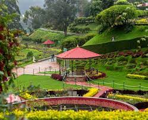

Country India State Tamil Nadu Region Kongu Nadu District Nilgiris District Government • Type Special Grade Municipality • Body Udhagamandalam Municipality Area[2] • Total 30.36 km2 (11.72 sq mi) Elevation[2] 2,240 m (7,350 ft) Population (2011)[3] • Total 88,430 • Density 2,900/km2 (7,500/sq mi) Demonym(s) Ootian, Ootacamandian, Udhaghaikaran Languages • Official Tamil Time zone UTC+5:30 (IST) PIN 643001 Tele 91423 Vehicle registration TN-43 Climate Subtropical Highland (Köppen) Precipitation 1,100 mm (43 in) Website tnurbantree.tn.gov.in/ Geography Ooty is located in the Nilgiri hills Ooty is located in the Nilgiri hills, which form a part of the Western Ghats in the Nilgiri Biosphere Reserve. It is separated from the neighboring state of Karnataka by the Moyar river in the north and from the Anaimalai and Palani hills in the south by the Palghat Gap. It is situated at an altitude of 2,240 metres (7,350 feet) above sea level. The total area of the town is 30.36 km2 (11.72 sq mi). Doddabetta is the highest peak (2,623 km or 1,630 mi) in the Nilgiris, about 10 km (6.2 mi) from Ooty.[19] Ooty Lake is an artificial lake covering 65 acres (26 ha) created in 1824. Pykara, a river located 19 km (12 mi) from Ooty, rises at Mukurthi peak and flows through a series of cascades with the last two falls of 55 metres (180 ft) and 61 metres (200 ft) known as Pykara falls. Kamaraj Sagar Dam is located 10 km (6.2 mi) from the Ooty. Emerald Lake, Avalanche Lake and Porthimund Lake are other lakes in the region.[23]